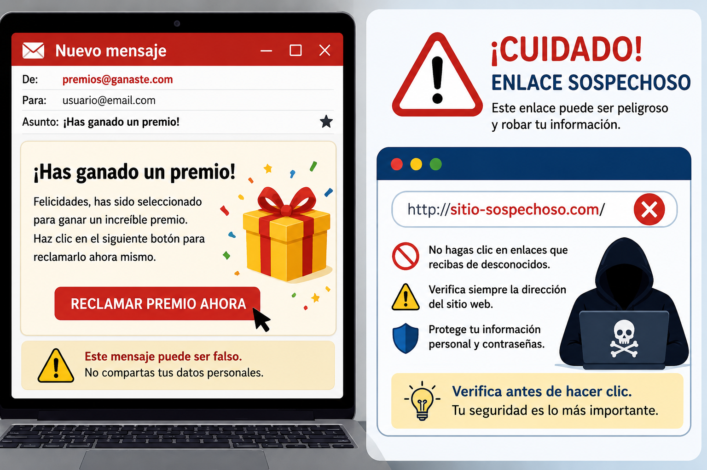

ARTÍCULO TÉCNICO
Protección contra estafas en línea (Phishing)
Introducción
PROTECCIÓN CONTRA ESTAFAS EN LÍNEA (PHISHING)
La protección contra estafas en línea es un tema muy importante porque actualmente muchas personas utilizan internet para estudiar, trabajar, realizar compras, comunicarse y acceder a diferentes servicios. Aunque internet ofrece muchas ventajas, también existen personas que buscan engañar a los usuarios para obtener información personal o financiera. Uno de los métodos más utilizados por los delincuentes es el phishing, una técnica que consiste en hacerse pasar por una empresa, una institución o una persona de confianza para obtener datos como contraseñas, números de tarjetas, cuentas bancarias o información personal.

El phishing puede llegar por diferentes medios, como correos electrónicos, mensajes de texto, llamadas telefónicas, redes sociales o aplicaciones de mensajería. En muchos casos, los mensajes parecen completamente reales, ya que utilizan logotipos, colores y nombres similares a los de bancos, empresas de envíos, plataformas digitales o instituciones educativas. Normalmente incluyen enlaces que llevan a páginas falsas donde el usuario introduce sus datos sin darse cuenta de que está siendo víctima de una estafa.
Para evitar este tipo de engaños es importante observar cuidadosamente los mensajes que recibimos. Debemos desconfiar de aquellos que solicitan información personal de manera urgente, prometen premios inesperados o indican que una cuenta será bloqueada si no ingresamos inmediatamente a un enlace. Antes de hacer clic, es recomendable revisar quién envió el mensaje y verificar si realmente pertenece a la empresa o institución mencionada. Si existe alguna duda, es mejor ingresar directamente a la página oficial escribiendo la dirección en el navegador.
Otro aspecto muy importante es el uso de contraseñas seguras. Cada cuenta debe tener una contraseña diferente, combinando letras mayúsculas, letras minúsculas, números y algunos símbolos cuando sea posible. También es recomendable cambiar las contraseñas periódicamente y no compartirlas con otras personas. Actualmente muchos servicios ofrecen la verificación en dos pasos, una medida adicional de seguridad que ayuda a proteger las cuentas incluso si alguien conoce la contraseña.
La educación digital también cumple un papel muy importante en la prevención del phishing. Cuando las personas conocen cómo funcionan estas estafas, es mucho más difícil que sean engañadas. Por esta razón, es importante hablar sobre estos temas en las instituciones
educativas, en los hogares y en los lugares de trabajo. Aprender a identificar páginas falsas, correos sospechosos y mensajes engañosos ayuda a navegar por internet de una forma más segura y responsable.
Además del phishing, existen otras amenazas relacionadas con el robo de información, por lo que siempre es recomendable mantener actualizado el sistema operativo, utilizar un antivirus confiable y descargar programas únicamente desde páginas oficiales. También se debe evitar conectarse a redes Wi-Fi públicas para realizar operaciones importantes como acceder a cuentas bancarias o realizar compras en línea, ya que estas redes pueden presentar riesgos para la seguridad de la información.
En conclusión, protegerse de las estafas en línea depende tanto de las herramientas de seguridad como de los buenos hábitos de cada usuario. Tener cuidado con los mensajes recibidos, verificar la información antes de compartir datos personales, utilizar contraseñas seguras y mantenerse informado sobre las nuevas formas de fraude son acciones que ayudan a reducir los riesgos. La prevención es la mejor forma de evitar ser víctima del phishing y de proteger nuestra información personal mientras utilizamos internet.